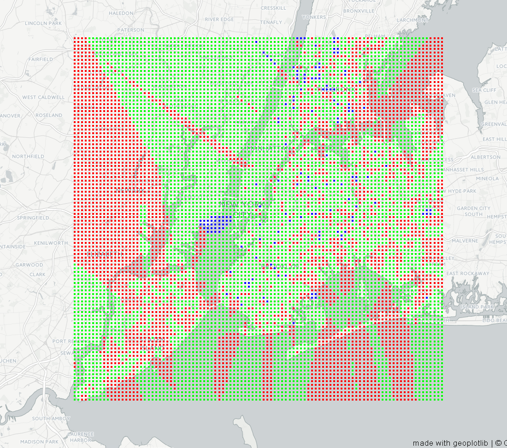

Our motivation
New York city has been for a long time called "The city that never sleeps". Some say that this is due to its incredible night life, the fact the subways don't close at night or because even at 3am you can still take a ferry around the New York Harbor. However, the city has also received numerous noise pollution complaints to the Department of Environmental Pollution during the past years. With this information we wondered if the reason why there are some many people around at any time is because the city doesn't let them sleep. In this page, we are going to analyse the different reasons why people complain about noise, where those happen and see if there any interesting facts around the noise in New York city.
Our dataset
The data we are going to analyse in this project consists of a 61 MB CSV file, that you can find here. The file contains 82294 rows and 53 columns of data that range from 2015 to 2017 including different categories of noise, locations, dates and complaint creation times among others.
Understanding the data
Let's start by visualizing some of the basic stats of our data.
Why do people complain?
Taking a look at some basics stats it can be easily seen that some noise types are by far more usual than others. This is the case for construction noises in its two different categories. There is also a significant amount of complaints pointing at barking dogs. The rest of the types have significantly lower occurrences. However, as it will shown later, the origin of some of these complaints like Alarms is important and can be originated from only one source.
Regarding the number of complaints distributed by street some interesting things begin to show up. The main source is Union Turnpike, a street located in Queens. This is quite an interesting fact taking into account that most of the rest of the streets here are located in the center of Manhattan.
Talk about cycles when done
However, a lot of these numbers don't say a lot without any context. Bellow we can see with more detail the number of complaints on each zone of the city by category and month of the year.
Mapping the data
Setting the noise type to Noise: Alarms and sliding through the months of the years it is really noticable that something is going on in a certain zone in Queens.
Curious cases
The initial exploration showed that Alarm Noise complaints in a neighborhood called Union Turnpike seem to be specially high. In order to find out if this is relevant or just corrupt data a deeper look at it is needed.
Union Turnpike Case
Union Turnpike has received an incredible amount of noise complaints during the past years; two times more than any other in the city, most of them being noisy alarm complaints. This seems weird taking into account that it looks like a quite peaceful neighborhood in Queens.
If taken a look in the following heat map, a certain point within the zone can be noticed.
Exploring the data in more detail reveals that all of the complints come from a single address in Union Turnpike that correspond to the Fire Brigade in that street.
After analyzing the surroundings of the fire brigade we observed that there are a few interesting buildings around it, such as two medical facilities. Since trying to obtain any relevant information in news, articles of supporting data regarding these complaints was quite difficult we decided to contact some of the companies and shops in the surrounding buildings by phone. Unfortunately they couldn't provide any insights on these complaints and most of them seemed unaware of them happening.
In conclusion, we can't really know if the huge number of noise pollution complaints are based on something that actually happened, or it's just something that is wrong with the data we used. However, due to the difficulty to find any relevant news, supporting data or information when contacting the surrounding buildings we are inclined to think that it is in fact corrupt data.
Predicting new cases
After seeing what's been going on during the past years, let's see if we can make some predictions based on the data we have. First we will take a look that 3 of the most important categories, since those are the types that have cought our attention the most. We can map future cases of these incidents based on a KN model.
However, using a K Neighbours model might not be the best option in this case. Therefore, we have tried and evaluated different models and compared their scores.
It is interesting to see that none of the model give a great accuracy even with different train/test percentages and train features. The highest one we can obtain is a 54.86% accuracy using a Decision Tree and only the street name as a train feature. this is probably due to the fact that our data isn't big or varied enought to contemplate all the different possibilities.